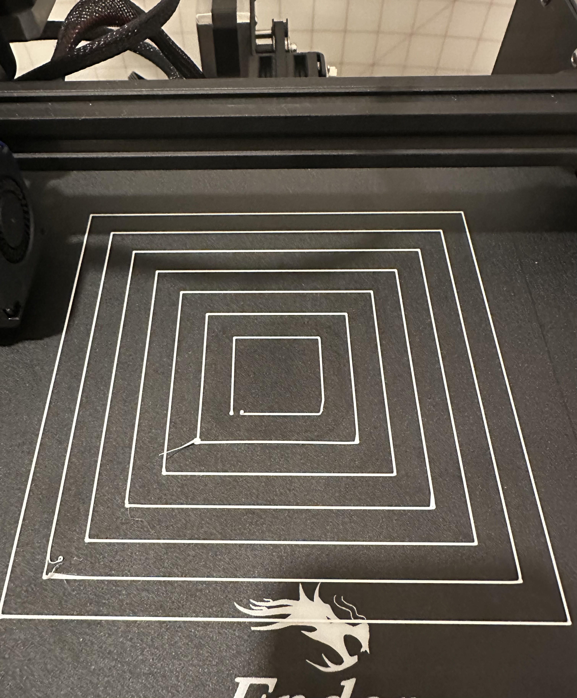
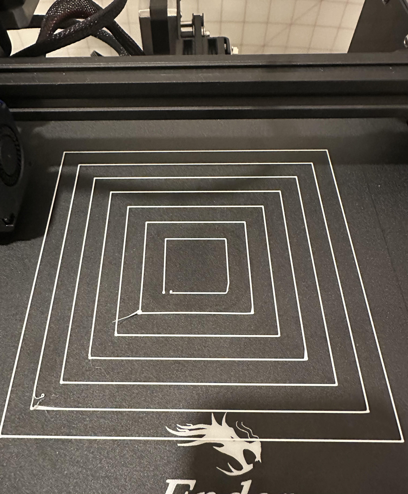
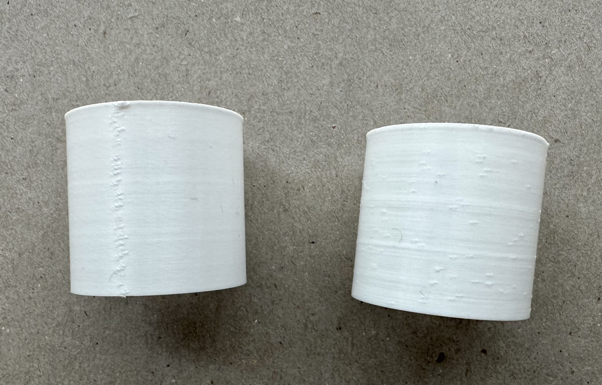
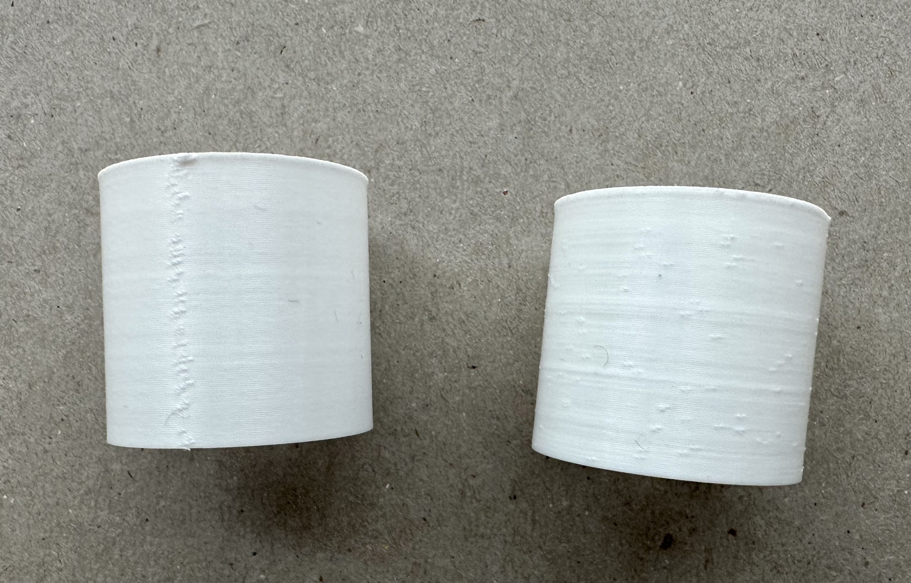
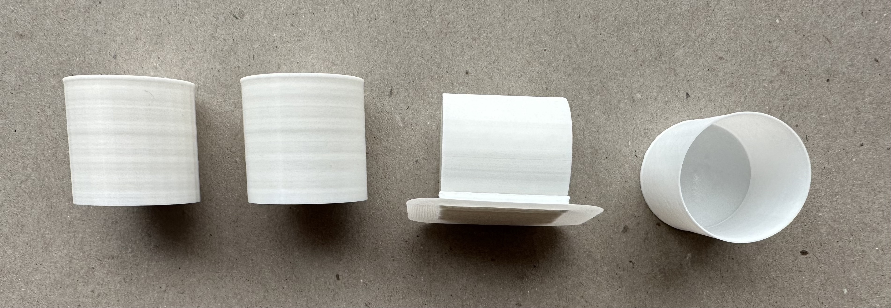
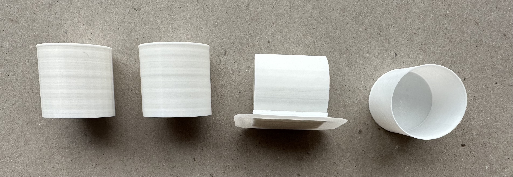
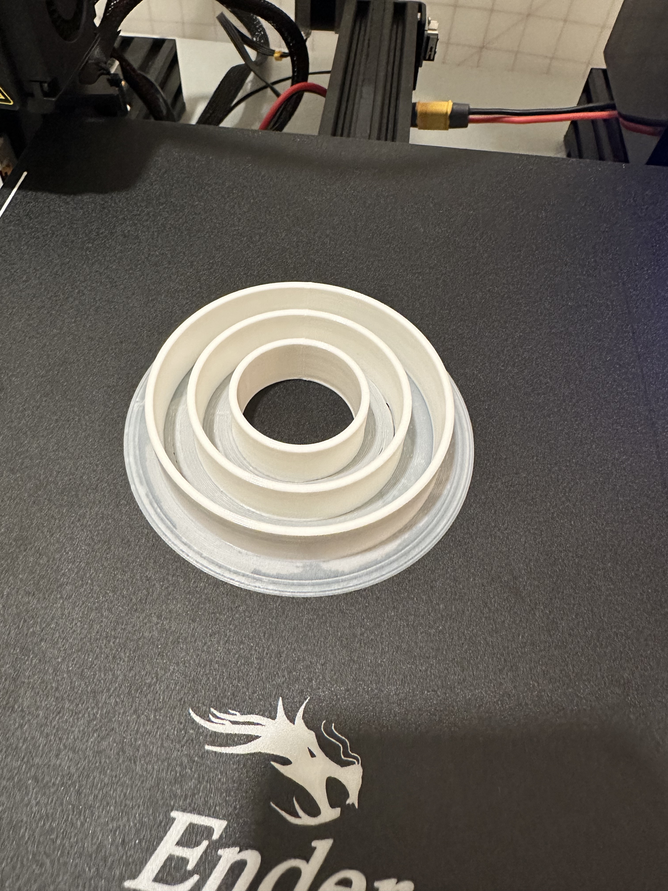
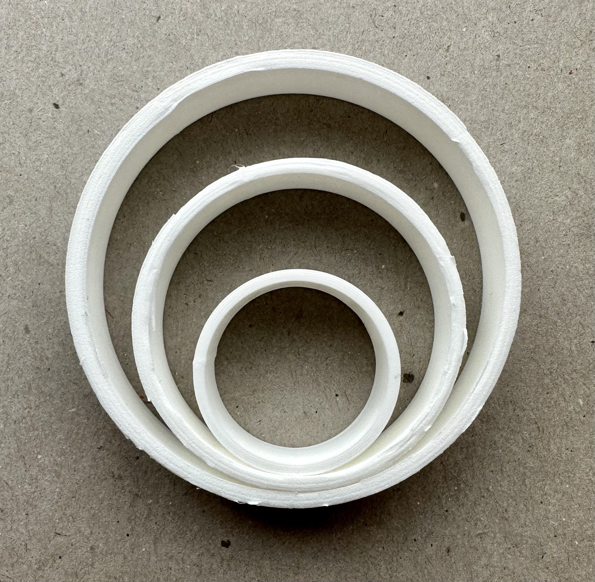

Steps
1
Unfortunately I already had my printer set up - so I don't have any pictures! But I will describe what I did as best as I remember.
First I took all of the pieces out of their boxes and laid the base flat. I followed the step by step directions to screw on the power source, front panel, and various moving parts. I added to the screw like pole to the motor and attached the arm to that. I also added the belt to the top arm to move the extruder around. Then I connected all of the wiring based on the letter values, chose the correct voltage, and turned on the power.
This process also included checking for loose screws throughout the process, tightening the eccentric nut on the various arms so that there would not be any wobble in the extruder, and finally bed leveling in the next step.
For me, the process took about 1.5 hr.
First I took all of the pieces out of their boxes and laid the base flat. I followed the step by step directions to screw on the power source, front panel, and various moving parts. I added to the screw like pole to the motor and attached the arm to that. I also added the belt to the top arm to move the extruder around. Then I connected all of the wiring based on the letter values, chose the correct voltage, and turned on the power.
This process also included checking for loose screws throughout the process, tightening the eccentric nut on the various arms so that there would not be any wobble in the extruder, and finally bed leveling in the next step.
For me, the process took about 1.5 hr.
2
I followed the tutorial to do a bed leveling, which consisted of moving the extruder around to various parts of the plate and moving the plate up or down with the gears under until paper slid under with some drag.
Then, I printed the test level print to make sure the adhesion was sufficient.

Then, I printed the test level print to make sure the adhesion was sufficient.

3
After that, I modeled some basic 2cm cubes in Rhino and exported them to Cura to slice. I printed the following cubes:

From left to right:
The low fidelity model took 24m 44s to print and was 2.00cm x 2.00cm x 1.98cm
The standard fidelity model took 32m 7s to print and was 1.99cm x 2.00cm x 1.99cm
The super fidelity model took 57m 23s to print and was 1.99cm x 2.00cm x 1.99cm
The concentric standard fidelity model took 31m 48s to print and was 1.99cm x 2.00cm x 1.99cm
From left to right:
The low fidelity model took 24m 44s to print and was 2.00cm x 2.00cm x 1.98cm
The standard fidelity model took 32m 7s to print and was 1.99cm x 2.00cm x 1.99cm
The super fidelity model took 57m 23s to print and was 1.99cm x 2.00cm x 1.99cm
The concentric standard fidelity model took 31m 48s to print and was 1.99cm x 2.00cm x 1.99cm
4
Then, I modeled some basic 3cm tubes in Rhino and exported them to Cura to slice. One was 0.4mm thick wall (single wall, since extruder is 0.4mm) and the other was 0.8mm thick wall, a double width, with random z-seam alignment. I printed the following tubes:

From left to right:
The single thickness tube took 26m 59s to print and was 2.99cm tall and 0.44mm thick
The double thickness tube took 31m 17s to print and was 2.99cm tall and 0.97mm thick

From left to right:
The single thickness tube took 26m 59s to print and was 2.99cm tall and 0.44mm thick
The double thickness tube took 31m 17s to print and was 2.99cm tall and 0.97mm thick
5
Next, I modeled some basic 3cm cylinders in Rhino and exported them to Cura to slice. I exported one with 0.1mm tolerance and the other 0.01mm tolerance. I printed the following cylinders:

From left to right:
The 0.1mm cylinder took 1h 2m 24s to print and was 2.99cm tall and 3.00cm in diameter.
The 0.01mm cylinder took 1h 4m 23s to print and was 2.99cm tall and 2.96cm in diameter.
The sideways cylinder took 1h 18m 53s to print and was 3.00cm tall and 2.98cm in diameter.
The spiral contour cylinder took 32m 52s to print and was 3.01cm tall and 2.97cm in diameter.

From left to right:
The 0.1mm cylinder took 1h 2m 24s to print and was 2.99cm tall and 3.00cm in diameter.
The 0.01mm cylinder took 1h 4m 23s to print and was 2.99cm tall and 2.96cm in diameter.
The sideways cylinder took 1h 18m 53s to print and was 3.00cm tall and 2.98cm in diameter.
The spiral contour cylinder took 32m 52s to print and was 3.01cm tall and 2.97cm in diameter.
6
Finally, I modeled some basic nested tubes in Rhino and exported them to Cura to slice. I printed the following nested tubes:


This took 2h 42m 35s to print.
This took 2h 42m 35s to print.
Resources
My creations:
Cube 3dm
Cube stl
Cylinder 3dm
Cylinder 0.001mm stl
Cylinder 0.1mm stl
Tube single wall 3dm
Tube single wall stl
Tube double wall 3dm
Tube double wall stl
Nested tube 3dm
Nested tube stl
External resources:Eccentric nut adjustment
Leveling tutorial 1
Leveling tutorial 2
Thingiverse for bed leveling model